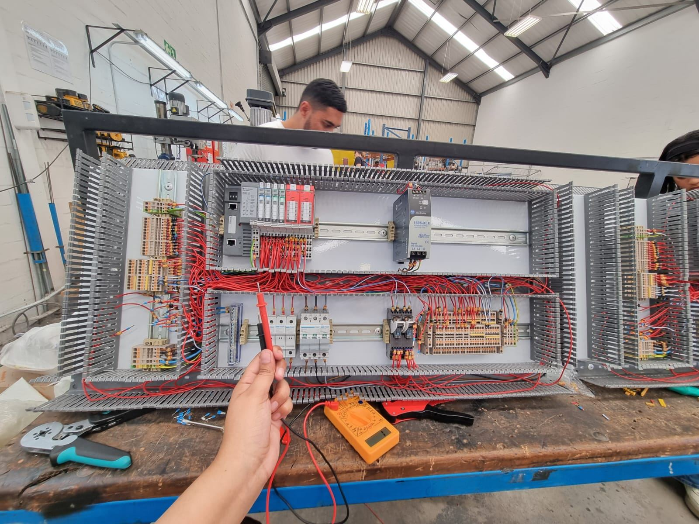
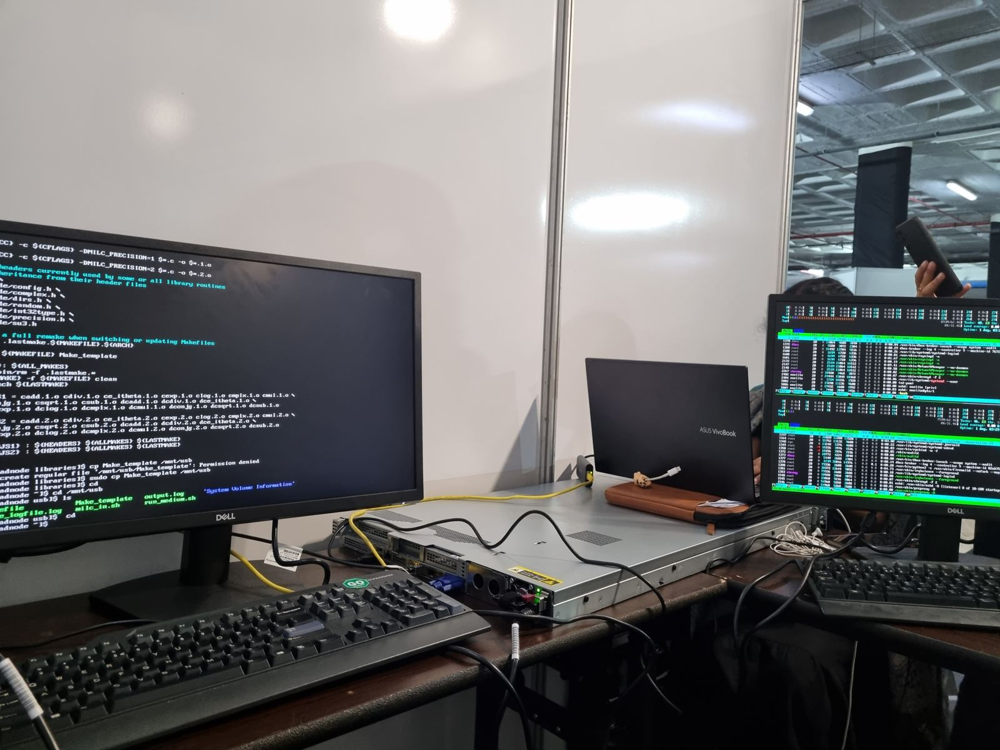
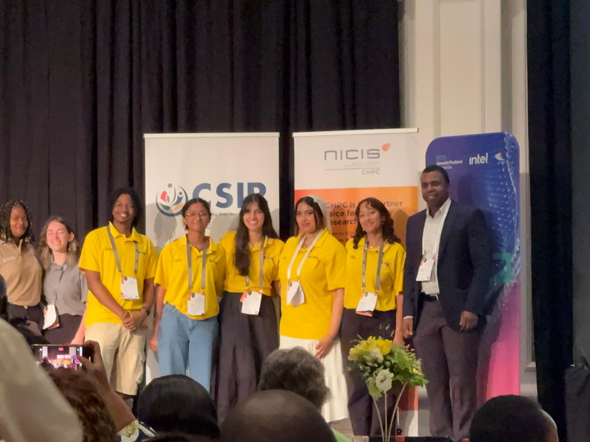
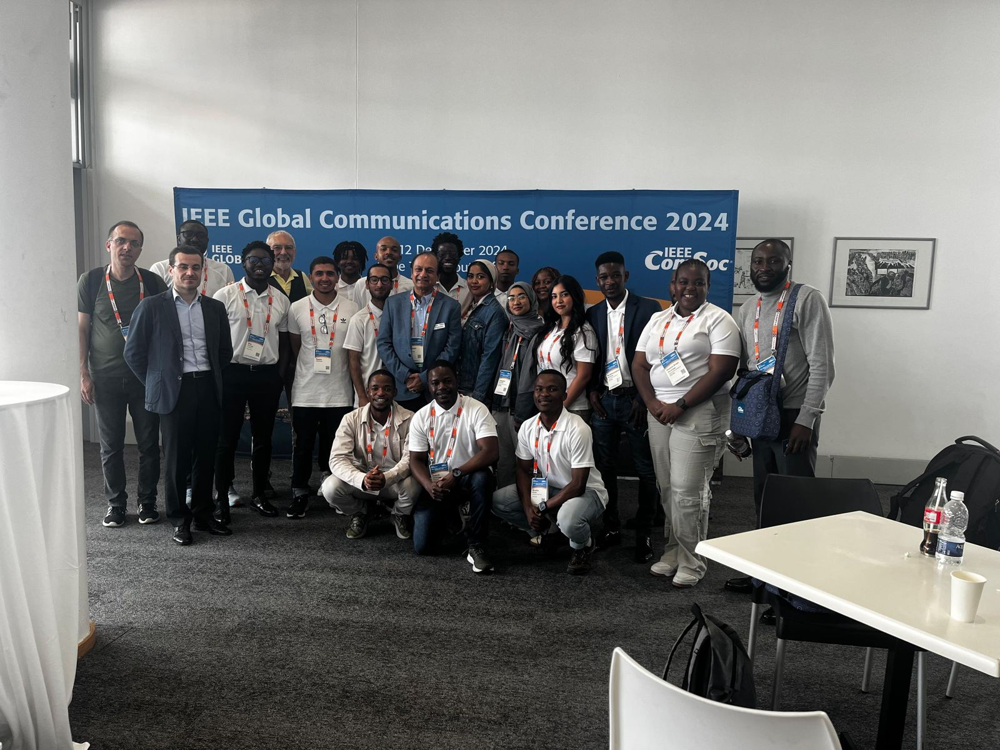

Hands-on, out in the world
From conference desks to control panels.
Head EBE Orientation Leader
After two years as an Orientation Leader and Deputy Orientation Leader, I stepped up to lead the Engineering & the Built Environment orientation team — welcoming a new cohort of first-years into UCT engineering, coordinating fellow leaders, and making sure incoming students had someone to look to on day one.


Vacation Work — Maverick Packaging (Pty) Ltd
I spent my December vacation building control panels that are installed into much larger industrial machines — the kind used to manufacture packaging with precisely placed holes, funnels and cutouts. My focus was the front panel: installing hardware like fuses and circuit breakers, wiring everything correctly to spec, and making sure every connection was properly labelled and tested before the panel was signed off.

CHPC Student Cluster Competition — First-Ever All-Girls Team
I competed in the Centre for High Performance Computing's Student Cluster Competition, a national benchmarking competition combining performance coding with the hardware design of compute nodes on a R400,000 budget. Our team, EEElite, first competed at the selection round in Gqeberha (Port Elizabeth) and went on to represent at the national round — becoming the competition's first-ever all-girls team, and taking home the Honourable Judge's Mention Award.


IEEE Globecom 2024 — Student Volunteer
IEEE Globecom is IEEE ComSoc's flagship global communications conference, and Cape Town hosted it in 2024. As a student volunteer I helped run the registration desk — signing delegates in and making sure everyone left with their goodie packs — before moving into the conference rooms to help set up for paper presentations and keep sessions running smoothly. It also meant a front-row seat to talks on emerging topics like 6G, and a chance to see how a major international conference comes together behind the scenes.

Tutoring — Electronic Devices & Circuits and Embedded Systems 1
I tutor Electronic Devices & Circuits (EEE3090F) and Embedded Systems 1 (EEE3094F) at UCT, alongside first-year mentoring within the department. Alongside that, I've been a private tutor since 2021, helping students build confidence in maths and science fundamentals long before they set foot on a university campus.